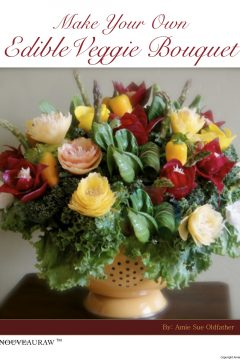

NouveauRaw Membership Update

Hello again, my loyal readers,
Just in case you missed last Monday’s email regarding the changes taking place at NouveaRaw you can click (
here) to get caught up. I also want to quickly apologize to those of you who received three emails Monday. Two went out from Chris, who is our website programmer, and one from me. It was an honest mistake and we didn’t mean to “spam” you. I appreciate your patience as we work through these changes.
As a reminder, starting this coming Monday (September 12th), there will be a monthly charge of $5.99 to access the membership part (about 95%) of my site. However, non-members, can still access over 100 FREE posts, which includes a selection of recipes, techniques and other educational pages.
This way we can continue to provide what we consider to be, one of the top gourmet raw sites on the web, at a minimal cost yet still stay free of ads, etc. Also there are many things we want to add to NouveauRaw, to make it even better, and your support will make that possible. There is even a place on our new forum for your suggestions, so you can share what you would like to see.
To pay for your membership, you can use PayPal or a credit card. Both are set to automatically renew your subscription each month, but, you may cancel at any time. If you do decide to cancel, you will still have access to the full site until the end of your pre-paid month. Later on when you want to come back, just re-subscribe. There will always be a place waiting for you at our table.
As a paid member, once signed in, the site will basically look the same as though nothing has changed. I wanted to continue to provide the same peaceful, calming, and inspirational place to hang out, the one that you’ve come to know and love. :)
So just to recap from Monday’s letter, here is a list of some of the new and current features of
NouveauRaw, with more to come in the future.
- As a bonus for those of you who have been my email subscribers, anybody who signs up by September 30th will receive a free copy of my “Edible Veggie Bouquet” ebook.
- Over 1,200 original whole-food, nutrient-packed, tried-and-tested recipes.
- Great “cooking” isn’t just about recipes, it’s also about techniques, I will continue to cover a wide variety of great techniques, which includes blending, dehydrating, spiralizing, marinating, and ideas for giving food that cooked appearance while still maintaining the nutrients and more.

NEW: A forum where you can connect with like-minded people, building a community of support and encouragement.- NEW: Our favorites program will now save your favorite recipes on our server so no matter what computer you use, your favorite recipes will always be available.
- Printable recipe PDFs – Customize and create your own offline raw recipe cookbook.
- Weekly emails where I share the latest and greatest recipes that I continue to create while on our culinary journey.
- I will continue to personally respond to your comments and questions.
- No ads, flashing banners, or other annoying things that don’t have anything to do with your interests.
If you have any questions, please contact me: [email protected]
Thank you so much for your support, and many blessings. amie sue
© AmieSue.com